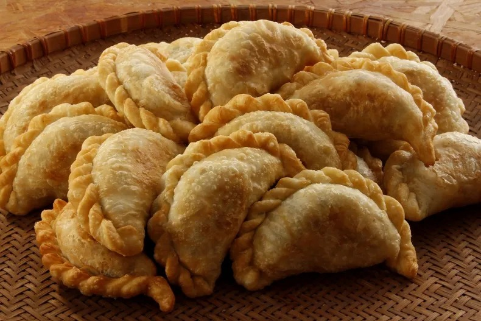
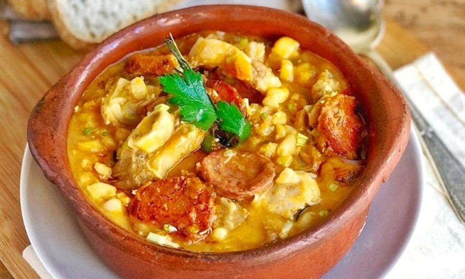
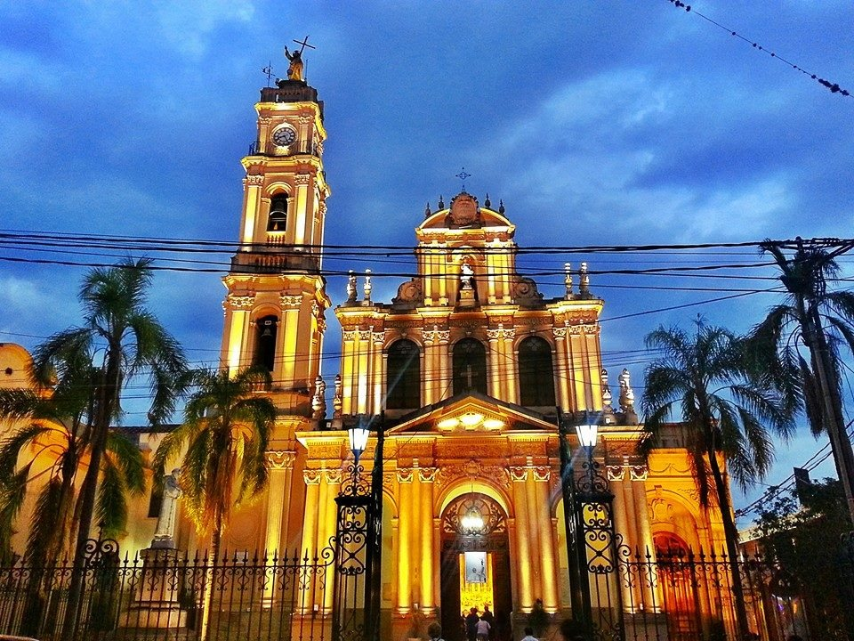
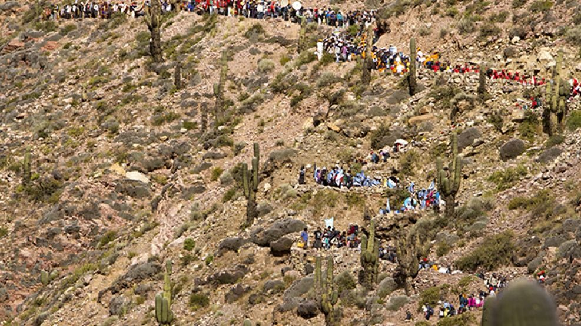
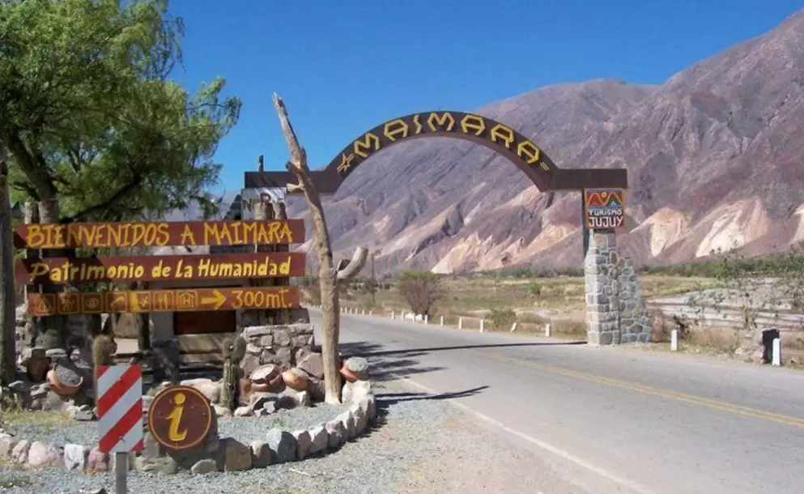
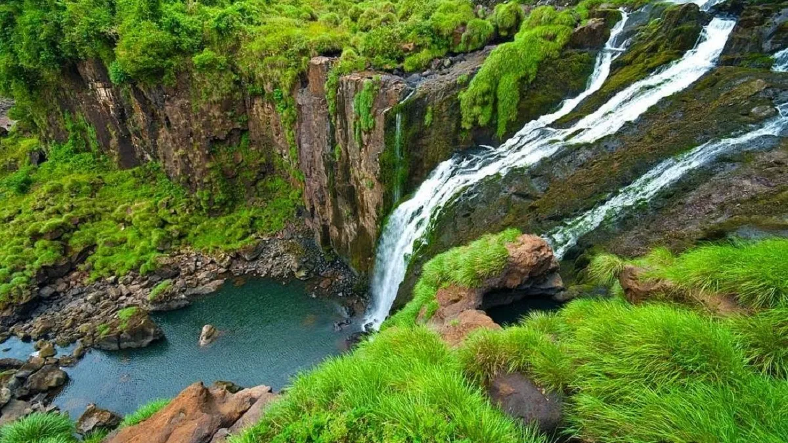
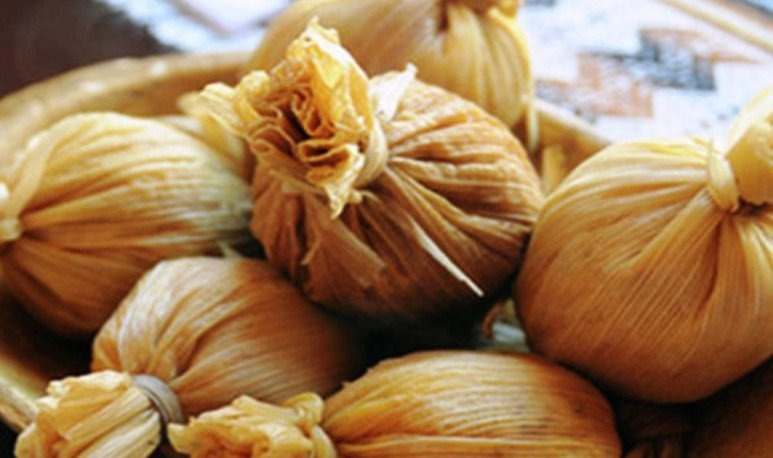
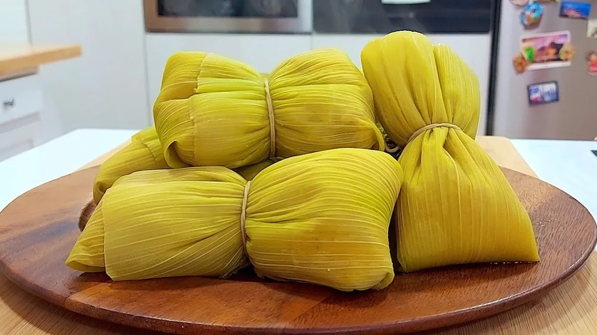

El Cerro de los Siete Colores es la joya indiscutida de Purmamarca, en la provincia de Jujuy. Esta maravilla natural, declarada Patrimonio de la Humanidad por la UNESCO, destaca por sus vibrantes franjas de colores que van desde el rojo intenso y naranja hasta el verde y violeta, formadas por la acumulación de diversos minerales durante más de 600 millones de años.
Toca fuera para cerrar
Un desierto blanco a 3.450 metros de altura que parece infinito. Las Salinas Grandes son el tercer salar más grande de Sudamérica, un espejo de sal donde el cielo y la tierra se confunden. Sus piletones turquesas y su horizonte inmenso lo convierten en un paisaje de otro planeta, imperdible en tu paso por la Puna jujeña
Toca fuera para cerrar
Conocidas como el Cerro de los 14 Colores, las Serranías del Hornocal son un imponente anfiteatro natural ubicado a 25 kilómetros de Humahuaca. A más de 4.300 metros de altura, sus formaciones en punta de flecha despliegan un abanico de tonalidades que van desde el amarillo y el verde hasta el rojo intenso, creando uno de los paisajes más dramáticos y bellos de toda la Argentina
Toca fuera para cerrar
Sumergite en el 'lado verde' de Jujuy. A pocos kilómetros de la capital, las Cascadas de Yala —como la famosa Cascada de La Horqueta— ofrecen un refugio de paz en medio de las yungas. Con saltos de agua cristalina que caen entre paredes de roca y una vegetación exuberante, es el destino perfecto para quienes buscan un trekking refrescante y una conexión directa con la selva de montaña
Toca fuera para cerrar
Declarada Patrimonio de la Humanidad, la Quebrada de Humahuaca es un valle andino de 155 kilómetros donde la historia y el color se funden. Sus montañas multicolores abrazan pueblos de adobe llenos de tradición, ferias artesanales y antiguas capillas coloniales. Es mucho más que un paisaje: es el corazón cultural de Jujuy, donde el tiempo parece detenerse entre cerros y coplas
Toca fuera para cerrar
La empanada jujeña es un tesoro gastronómico que se distingue por su equilibrio de sabores. Preparada tradicionalmente con carne cortada a cuchillo, papa picada bien fina, cebolla de verdeo y huevo duro, su secreto está en el jugo y el toque de comino. Siempre acompañada por una buena llajua (salsa picante de tomate y locoto), es el bocado obligado que resume la identidad y el calor de los hogares andinos
Toca fuera para cerrar
Un laberinto de formaciones rojas intensas que parecen sacadas del planeta Marte. Ubicada en el pueblo de Uquía, la Quebrada de las Señoritas es uno de los tesoros más impresionantes y menos masificados de Jujuy. Entre cañadones profundos y grietas tectónicas, sus paredes de color óxido guardan una leyenda ancestral sobre princesas incas y tesoros ocultos, ofreciendo una experiencia de trekking única bajo el cielo azul de la Puna
Toca fuera para cerrar
El locro es el plato insignia del invierno y las fechas patrias en Jujuy. Este guiso prehispánico es una explosión de sabor y energía, cocinado a fuego lento con maíz blanco, porotos, zapallo plomo —que le da su cremosidad dorada— y diversos cortes de carne, como patitas de cerdo, panceta y chorizo colorado. Se corona siempre con la quiquirimichi (salsa de grasa, pimentón y verdeo), convirtiéndolo en un abrazo tibio al alma
Toca fuera para cerrar
En pleno centro histórico de la capital, la Basílica de San Francisco se alza como un símbolo de fe y patrimonio. El templo actual, inaugurado en 1927, combina estilos neomanieristas y barrocos, destacando por su elegante torre de cuatro cuerpos y su cúpula octogonal. En su interior, el imponente púlpito tallado y los altares de mármol de Carrara crean una atmósfera de paz única, mientras que su Museo de Arte Sacro resguarda tesoros coloniales que cuentan la historia de la orden en el norte argentino
Toca fuera para cerrar
Ubicado en el extremo norte de la Puna, Yavi es un oasis de paz que parece detenido en el siglo XVIII. Fue la sede del único Marquesado en territorio argentino: el de Tojo. Sus calles empedradas, sus casas de adobe y la imponente Iglesia de San Francisco, con sus altares laminados en oro y ventanas de alabastro, guardan los secretos de la nobleza colonial y la historia de las guerras de independencia
Toca fuera para cerrarUbicada frente a la Plaza Belgrano, la Catedral Basílica es uno de los tesoros arquitectónicos más antiguos del norte. Su fachada blanca y elegante esconde uno de los tesoros coloniales más valiosos de Argentina: su imponente púlpito tallado en madera de cedro, considerado una obra maestra del estilo barroco cuzqueño. Es el corazón espiritual de la ciudad, donde la historia de la fundación y el arte religioso se funden bajo sus naves de estilo neoclásico
Toca fuera para cerrar
Vivir la Semana Santa en Jujuy es testigo de una devoción única. En la Quebrada, el silencio de los cerros se rompe con el sonido de los sicuris que acompañan a la Virgen de Copacabana del Abra de Punta Corral. El punto máximo de emoción son las Ermitas de Tilcara: cuadros gigantes hechos artesanalmente con semillas, flores y frutos que representan el Vía Crucis, convirtiendo las calles en una galería de arte natural y fe profunda
Toca fuera para cerrar
La Peregrinación a la Virgen de Copacabana del Abra de Punta Corral es la mayor muestra de fe del NOA. Miles de fieles ascienden a casi 4.000 metros de altura por cerros imponentes, en una travesía que combina devoción religiosa y cultura andina. El regreso de la Virgen es un espectáculo único: baja acompañada por cientos de bandas de sicuris cuyo sonido de cañas resuena en toda la Quebrada, creando un clima de emoción espiritual inigualable
Toca fuera para cerrar
En el corazón de la Quebrada de Humahuaca, Maimará cautiva con su famosa Paleta del Pintor, una formación montañosa de colores intensos que parecen pinceladas sobre el cerro. Este pueblo, rodeado de huertas y viñedos de altura, invita a la contemplación y al descanso. Es un destino donde el tiempo transcurre lento entre sus calles tranquilas, su histórico Cementerio de Altura y el colorido de sus tradicionales festejos de Carnava
Toca fuera para cerrar
Ubicado en el paraje de Huichaira (cerca de Tilcara), el Museo en los Cerros (MEC) es un espacio dedicado a la fotografía que se integra perfectamente con el paisaje andino. Diseñado con materiales locales como piedra y adobe, este museo busca tender un puente entre el arte contemporáneo y la cultura regional, ofreciendo una experiencia de silencio y contemplación única en medio de la naturaleza
Toca fuera para cerrar
Más que una sala, el Cine Teatro Municipal Select es el guardián de la memoria audiovisual de la ciudad. Con más de un siglo de vida, este histórico edificio fue rescatado de la demolición para convertirse en un centro cultural vibrante. Hoy es sede de ciclos de cine independiente, festivales internacionales como el de las Alturas y talleres artísticos, consolidándose como un espacio de encuentro inclusivo donde la arquitectura clásica se une con la expresión artística moderna
Toca fuera para cerrar
Ubicado en el extremo norte de la Puna, Santa Catalina es uno de los pueblos más septentrionales y auténticos de Argentina. A más de 3.700 metros de altura, este rincón de casas de adobe y techos de paja parece detenido en el tiempo. Rodeado de cerros áridos y rebaños de llamas, es el destino ideal para los viajeros que buscan silencio absoluto, cielos estrellados y una conexión profunda con las tradiciones más puras de la cultura andina
Toca fuera para cerrar
El Pucará de Maimará, también conocido como el "Pucará de la Loma de Hornillos", es un sitio arqueológico estratégico ubicado sobre una colina que domina el valle. Esta antigua fortaleza omaguaca, construida con muros de piedra, servía como punto de vigilancia y defensa hace siglos. Hoy, caminar entre sus restos permite no solo conectar con el pasado prehispánico de la región, sino también disfrutar de una vista privilegiada de la Paleta del Pintor y el pueblo de Maimará desde la altura
Toca fuera para cerrar
Un oasis de vida en la inmensidad de la Puna. A 3.600 metros de altura, la Laguna de los Pozuelos es uno de los humedales más importantes del mundo y hogar de miles de flamencos rosados. Este espejo de agua, rodeado de cerros áridos, es un santuario de biodiversidad donde el silencio solo es interrumpido por el canto de las aves, ofreciendo uno de los paisajes más salvajes y conmovedores del extremo norte argentin
Toca fuera para cerrar
Considerada una de las carreteras más espectaculares de Argentina, la Cuesta del Lipán es un zigzagueante camino de asfalto que trepa la montaña hasta alcanzar los 4.170 metros de altura. Con curvas cerradas que parecen pinceladas en el cerro, este tramo de la Ruta 52 une el pueblo de Purmamarca con las Salinas Grandes, ofreciendo vistas panorámicas vertiginosas y la increíble sensación de estar tocando las nubes
Toca fuera para cerrar
Una grieta profunda y majestuosa en el corazón de la montaña. La Garganta del Diablo es un imponente cañón de paredes verticales ubicado a pocos kilómetros de Tilcara. Tras una caminata entre formaciones rocosas, el sendero revela una caída de agua cristalina y vistas vertiginosas que muestran la fuerza erosiva de la naturaleza. Es el destino perfecto para quienes buscan aventura y una perspectiva diferente de la Quebrada
Toca fuera para cerrar
El contraste inesperado de Jujuy. Las Yungas son una selva de montaña exuberante que envuelve el este provincial en un manto de nubes y biodiversidad. Entre ríos cristalinos, helechos gigantes y una fauna fascinante —donde reina el yaguareté—, este ecosistema ofrece un paisaje de verde infinito que rompe con la aridez de la Puna. Es el escenario ideal para el senderismo, el avistaje de aves y la aventura en estado puro
Toca fuera para cerrar
El guardián de la selva jujeña. Con más de 76.000 hectáreas, Calilegua es el parque nacional más grande del Noroeste Argentino y el refugio principal de las Yungas. Es un paraíso de biodiversidad donde conviven cientos de especies de aves, monos caí y el majestuoso yaguareté. Sus senderos atraviesan distintos niveles de selva y montaña, ofreciendo una experiencia de naturaleza virgen, aire puro y paisajes de un verde infinito que sorprenden en cada rincón

Un lienzo natural grabado en la montaña. La Paleta del Pintor es una formación geológica que abraza al pueblo de Maimará, famosa por sus imponentes pliegues de colores que parecen pinceladas de un artista gigante. Sus tonalidades ocres, rojizas y amarillas alcanzan su máximo esplendor al atardecer, cuando la luz del sol resalta cada matiz, convirtiéndola en una de las postales más artísticas y fotografiadas de toda la Quebrada de Humahuaca
Toca fuera para cerrar
Un bocado con siglos de historia. El tamal jujeño es una delicadeza andina elaborada con una masa de maíz amarillo rellena de carne (generalmente de cabeza de cerdo o vaca) finamente picada y sazonada con comino, pimentón y cebolla de verdeo. Envueltos cuidadosamente en chala (hoja seca de maíz) y cocidos al vapor, estos 'paquetitos' guardan un interior tierno y jugoso que es un clásico indiscutible de las ferias y mesas familiares del norte
Toca fuera para cerrar
La humita es el corazón del maíz hecho manjar. A diferencia del tamal, se elabora con granos de maíz fresco (choclo) rallado, que se mezcla con un sofrito de cebolla, pimentón y abundante queso de cabra o vaca. Envueltas en sus propias hojas verdes y atadas en forma de paquetito, pueden ser saladas o dulces (con azúcar y anís). Es una receta ancestral, cremosa y llena de sol, que representa la esencia más pura de la cosecha andina
Toca fuera para cerrar
Los mercados de Jujuy son el alma palpitante de sus pueblos. Espacios como el Mercado Central de San Salvador o el Mercado de Tilcara son un festín para los sentidos: entre pasillos llenos de aroma a especias y hierbas medicinales, podés encontrar desde tejidos de lana de llama y artesanías en cerámica hasta los sabores más auténticos de la Puna. Es el lugar donde la comunidad se encuentra y donde el viajero descubre la verdadera identidad jujeña a través de sus productos y su gente
Tocar fuera para cerrar
Una experiencia de altura que desafía los límites. La Ruta del Vino de Jujuy es una de las más altas del mundo, con viñedos que crecen entre los 2.000 y 3.300 metros sobre el nivel del mar. En bodegas boutique ubicadas en plena Quebrada de Humahuaca, como en Purmamarca, Maimará y Huacalera, se producen tintos intensos —especialmente el Malbec y el Syrah— que capturan el sol de la Puna y el carácter mineral de los cerros de colores
Tocar fuera para cerrar
El Parque Lineal Xibi Xibi es el pulmón verde que transformó el centro de San Salvador de Jujuy. Este espacio recreativo corre a lo largo del cauce del río homónimo, conectando la ciudad con la naturaleza a través de ciclovías, sendas peatonales y áreas de ejercicio. Es el lugar favorito de los jujeños para caminar, tomar mate al aire libre y disfrutar de un paisaje urbano moderno que respeta el entorno natural del río
Tocar fuera para cerrar
Conocidas como el 'Balcón de Jujuy', las Termas de Reyes son un santuario de bienestar en medio de la selva de montaña. A solo 19 km de la capital, sus aguas ricas en minerales brotan a más de 50°C entre cerros cubiertos de verde intenso. Es el lugar perfecto para desconectarse del mundo, disfrutar de baños curativos y maravillarse con una vista panorámica privilegiada de las Yungas
Tocar fuera para cerrar
Ubicado cerca de El Carmen, el Dique Las Maderas (que forma parte del complejo Las Ciénagas) es el espejo de agua más grande de la zona de los Pericos. Rodeado de cerros verdes, es un paraíso para los amantes de la pesca de pejerrey y los deportes náuticos como el kayak o la navegación a vela, ofreciendo un paisaje tranquilo y fresco que contrasta con la aridez del norte
Tocar fuera para cerrar
El Balneario Municipal de El Carmen es el refugio favorito para combatir el calor en Jujuy. Ubicado al pie del dique La Ciénaga, este complejo cuenta con una enorme pileta, amplios espacios verdes con asadores y toda la infraestructura para pasar un día en familia. Es el punto de encuentro por excelencia durante el verano, combinando la frescura del agua con un entorno natural de cerros y mucha tranquilidad
Tocar fuera para cerrar
En el extremo oriental de Jujuy, El Bananal es un paraíso escondido donde la selva de las Yungas se vuelve tropical. Este paraje, famoso por sus plantaciones de bananas, cítricos y frutas exóticas, es la puerta de entrada a ríos de aguas cristalinas que bajan de la montaña. Caminar por sus senderos entre vegetación cerrada y refrescarse en sus pozas naturales es descubrir un Jujuy indómito, húmedo y lleno de vida

"Un oasis de vida en la inmensidad de la Puna. A 3.600 metros de altura, la Laguna de los Pozuelos es uno de los humedales más importantes del mundo y el hogar predilecto de miles de flamencos rosados. Este espejo de agua, rodeado de cerros áridos, es un santuario de biodiversidad donde el silencio solo es interrumpido por el canto de las aves, ofreciendo uno de los paisajes más salvajes y conmovedores del extremo norte argentino
Tocar fuera para cerrar